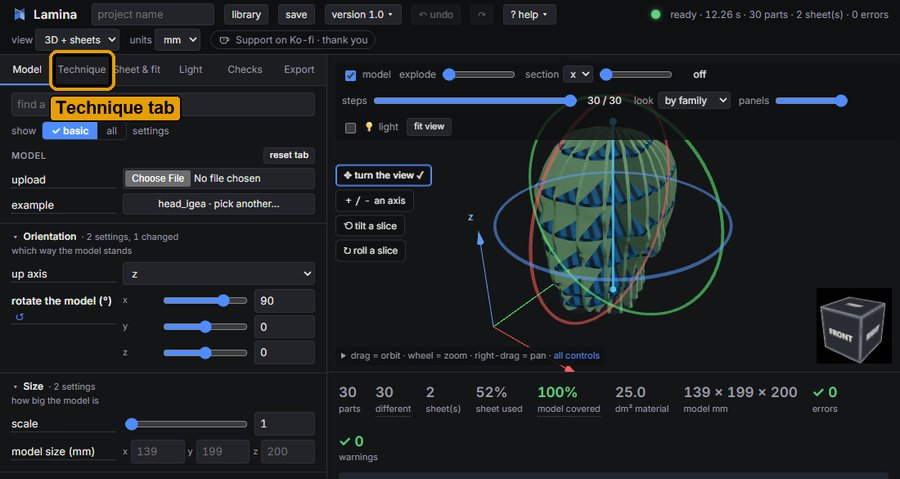
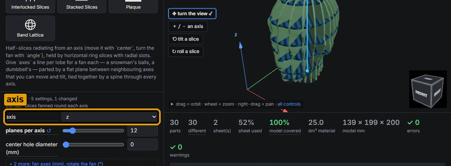
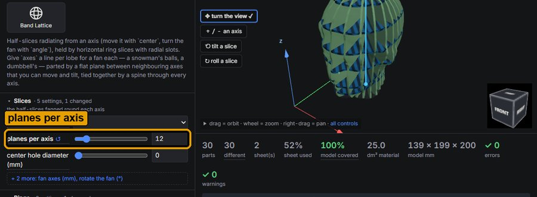
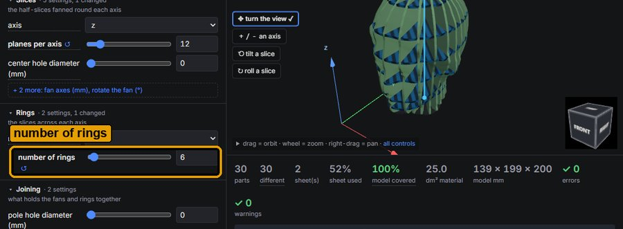
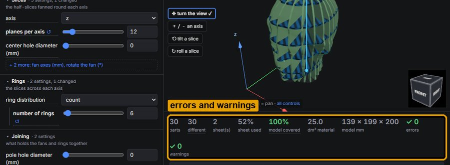
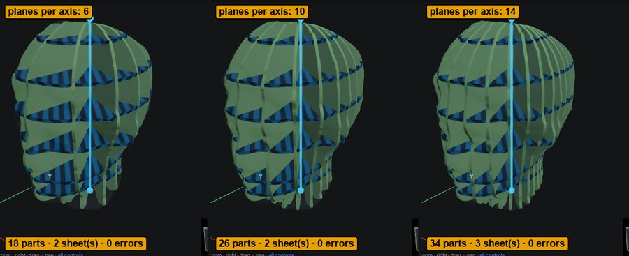
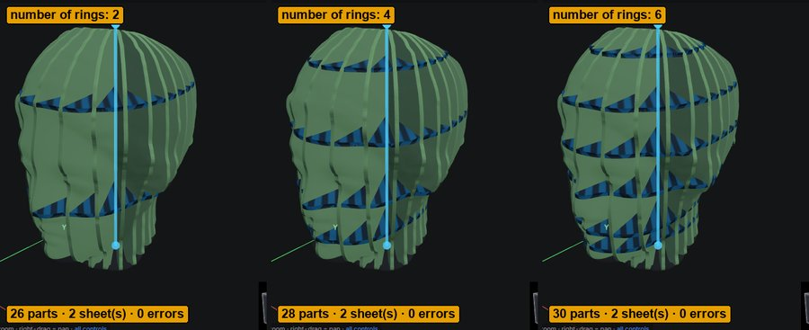
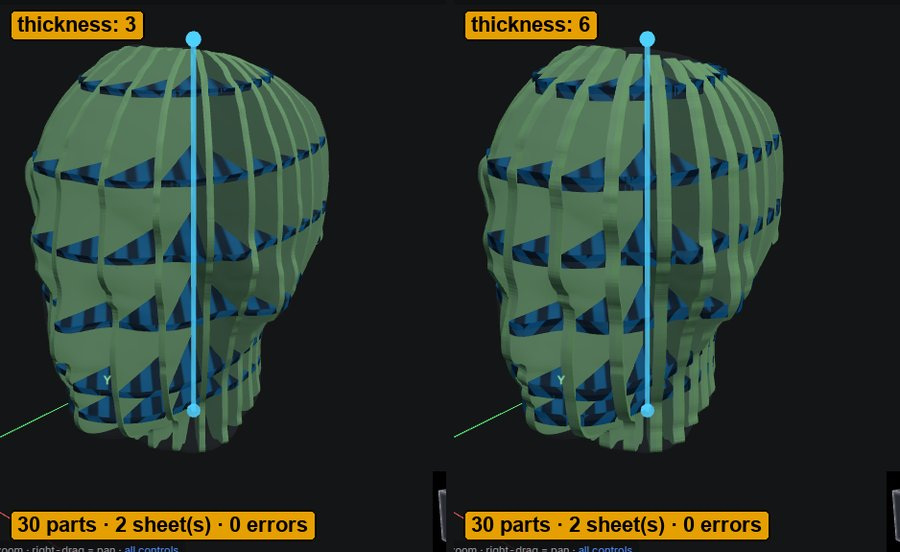
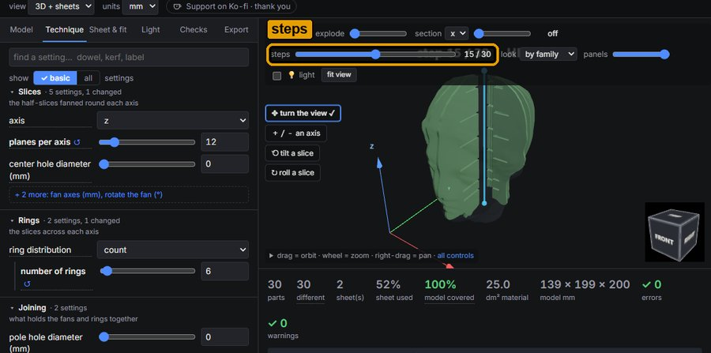

How to make a radial slice sculpture
Half-slices stand round an axis, like the segments of an orange, and flat rings hold them in place. It suits round shapes: heads, vases, lamps and fruit. This guide uses Lamina, a free laser slicer that runs in your browser.
- 1. Start hereThe steps every job has: your model, its size, the checks, the files. Open
- 2. Your machineLaser, router or 3D printer, the material and its thickness. Open
- 3. Your technique: this pageThe settings of Radial Slices, and what each one changes.
Which shapes work
Shapes that go round one axis. A shape with two lobes, such as a snowman or a dumbbell, takes one axis for each lobe, and Lamina joins the lobes with a spine. For a shape with ears or arms on the same lines, use stacked slices.
Set the technique
Every picture on this page shows one model: the head that the link opens. An orange ring with a label marks the control to use. To use your own model, upload it on the Model tab: Start here shows how.
- Open Lamina on Radial Slices. It opens with the head cut in half-slices and rings. Click the Technique tab.

- Set axis to the line the half-slices stand round. For a head or a vase, that is the height: z.

- In planes per axis, type the number of planes through the axis. Each plane gives two half-slices.

- In number of rings, type how many rings hold the half-slices.

- Read the errors and warnings under the 3D view after each change. The buttons under a message fix it.

What each setting changes
Each picture shows the same head from the same side, with one setting changed. The label at the bottom gives the counts that Lamina shows under the 3D view.
planes per axis
How many planes go through the axis. More planes show more of the surface.
Each plane adds two half-slices. On this head, 6 planes make 18 parts on 2 sheets, 10 make 26 parts, and 14 make 34 parts on 3 sheets.

number of rings
How many flat rings hold the half-slices. Each ring has a slot for every half-slice.
More rings hold the half-slices in more places and add few parts: 2 rings give 26 parts on this head, 4 give 28, and 6 give 30.

thickness (on the Sheet & fit tab)
The thickness of your sheet. Every slot is cut as wide as this number.
The number of parts stays, 30 on this head. The half-slices and the rings are thicker.

More settings
| Setting | What it does | It changes |
|---|---|---|
| center hole diameter | The half-slices stop at this diameter round the axis. | At 0, Lamina takes the smallest hole that all half-slices fit round. A smaller hole gives a collision error. |
| ring distribution | count: a number of rings. distance: one ring every so many mm. | With distance, a taller model gets more rings. |
| pole hole diameter | A hole in the middle of every ring. | For a pole or a dowel through the model. 0 is no hole. |
| vary the spacing | You draw the angle between planes round the axis. | More half-slices where the shape changes fast. |
Then: the machine, the checks and the files
These steps are the same for every technique, so they have their own pages.
- On the Sheet & fit tab, choose your machine, your material and its thickness: Laser, router or 3D printer.
- Correct every error, cut the fit test, and download the files: Start here, steps 10 to 13.
- Slide the half-slices into the slots of the rings. To see the order, drag steps over the 3D view.
